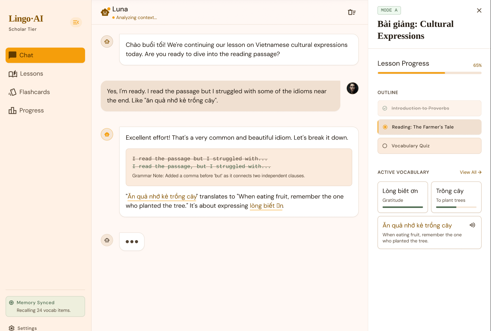

Thị trường đã chuyển từ “học nội dung giống nhau” sang “học theo trí nhớ và ngữ cảnh cá nhân”. Ai vẫn học bằng các công cụ rời rạc sẽ tiếp tục quên nhanh, dùng chậm, và không đưa tiếng Anh vào công việc thật.
Học bài ở một nơi, chat ở một nơi, lưu lỗi ở chỗ khác, rồi tự cố nhớ xem hôm qua mình sai gì.
Mỗi buổi học gần như reset bối cảnh. Hệ thống không nhớ mục tiêu nghề nghiệp, từ vựng yếu hay lỗi lặp lại của từng người.
Người học có cảm giác “đã học khá nhiều” nhưng vẫn chậm khi viết email, họp, hoặc phản xạ trong tình huống thật.
Nhóm đau nhất là người học tiếng Anh để dùng trong công việc: email, meeting, thuyết trình, đọc tài liệu. Họ không cần thêm một thư viện bài học chung. Họ cần một hệ thống nhớ được chính họ.
Một người học có thể hiểu bài trong lúc đọc, nhưng khi quay lại nhắn tin hoặc nói, họ vẫn mắc lại đúng lỗi cũ. Vấn đề không phải thiếu nội dung. Vấn đề là không có hệ thống nào nối liền bài học, lỗi sai, ôn tập và ngữ cảnh cá nhân thành một trí nhớ chung.
Bạn mắc lỗi trong chat hôm nay. Ngày mai lỗi đó trở thành bài ôn. Tuần sau nó xuất hiện lại đúng lúc bạn sắp quên. Hệ thống bắt đầu nhớ bạn như một gia sư thật.

Đây không phải một chatbot dạy tiếng Anh. Đây là một hệ thống học tập biết nhớ, biết sửa, biết nhắc lại đúng lúc, để mỗi lần học sau đều thông minh hơn lần trước.